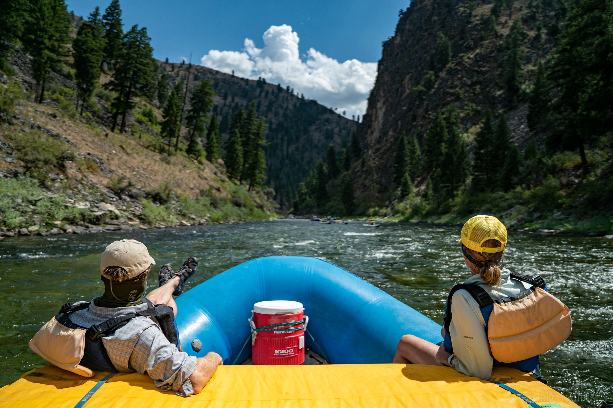

Frequently Asked Questions
How long are the trips?
Half Day trips are about 10 miles in length
and you should plan on about 4 hours.
Full Day trips are between 15-20 miles in length and
leave Banks at 7:45am for Canyon and 8:30 for Cabarton
and returning to Banks at about 7pm.
What should I wear?
Closed-toe shoes that will not fall off your feet.
Board shorts or swim suit; hats are sunglasses are prefered!
What should I bring with me?
Leave all valuables that can not get wet behind!
Plenty of sunscreen, water, water, and water!
Towel for after your trip, and a change of clothes.
You should wear whatever you feel comfortable getting
wet in, such as swimsuits and shorts. Also bring shoes
or sandals that can get wet and stay attached to your feet.
Don't forget your signed waiver at the start of the trip!.
How many people fit in the rafts?
6-8 for morning trips and 4-6 for day trips
Do I need a reservation?
We do require reservations.
However we try out best to accomodate walkins as well.
Call our office anytime to find out if we have availability for a set day.
